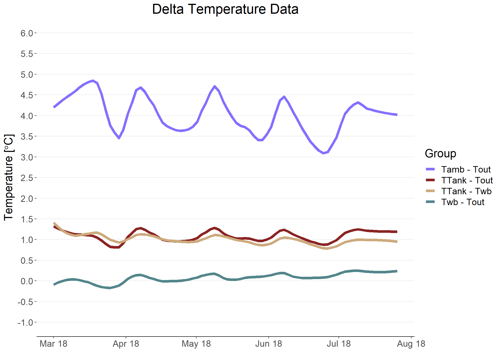

General Documentation
Foreword
This document references the standalone R file titled portable_multiunit_analysis.
1. Introduction
I thought I’d be a good idea to make a comprehensive data analysis file for the portable unit. This document serves to:
- Break down each parameter analysed by the code
- Explain what quantitative methods are used
- How the data can be intepreted
With that in mind, this document can also be a quick guide to R, and how to troubleshoot should issues arise in the data analysis.
2. Setting Up
Today’s document set will be utilising data compiled from two of Cloud9’s portable units.
First, we need to import and extract the data we need to use. We first need to import the relevant libraries, then run a check:
fulldata = read_csv("~/Work Folder/External SD Data/Cloud9 Data/Full Data/fulldata.csv")
n = readline(prompt = "Number of portable units:")
n = as.integer(n)
old_date = as.numeric(fulldata$Date)
old_date = na.omit(old_date)
old_date = min(old_date)
if(exists("fulldata") == FALSE){
print("File directory is incorrect, please specify the correct folder.")
}else if (old_date <= 20150101){
print("Incorrect data files compiled (Remove 2000/01/01 data file when combining CSV)")
}else if (n==""){
print("Number of units not defined. Please specify number of units.")}We are essentially reading the data file from the work folder, which in this case is a .csv file. Other file extensions are also supported in R.
Thereafter, a check is performed to ensure that the following rules are not broken
- File directory is the correct one
- No bad data is compiled, files must be strictly Portable Airbitat data (i.e. 00082120180220.csv)
- Number of units are specified - it is so that this file can run an analysis when multiple units worth of data are compiled
Next, we extract the day and month of the data:
fulldata$Month = as.numeric(substr(fulldata$Date,5,6))
fulldata$Day = as.numeric(substr(fulldata$Date,7,8))
waterdata = data.frame("Month" = as.factor(fulldata$Month),
"Day" = as.numeric(fulldata$Day),
"Date" = as.Date(as.character(fulldata$Date),"%Y%m%d"),
"Inlet_Valve" = as.numeric(fulldata$`Inlet Valve Status`))
waterdata = split(waterdata,waterdata$Month)Lastly, we remove irrelevant data from the extracted data set:
fulldata = subset(fulldata, `Data Validity`!=0 & `Submersible Pump Status`!=0 & `High Capacity Pump Status`!=0)
fulldata$`WetBulb Efficiency` = as.numeric(fulldata$`WetBulb Efficiency`)
fulldata$`Fan 2 Speed` = as.numeric(fulldata$`Fan 2 Speed`)
fulldata$`Wet bulb` = as.numeric(fulldata$`Wet bulb`)
fulldata = na.omit(fulldata)
fulldata = subset(fulldata, `Fan 2 Speed` >950 & `Fan 2 Speed` <3000)
fulldata = subset(fulldata, `Wet bulb` > 20)
fulldata = subset(fulldata, `WetBulb Efficiency` <160)Irrelevent data includes those that fulfil the following criteria:
- When the High Cap Pump and submersible pump is off
- When the MCU Fans have not reached full power, or there is too high of a fan speed (perhaps from current surging or running tests)
- When Wet Bulb Temperatures is less than 20, and Wet Bulb Efficiency is less than 160% (to remove errorneous sensor data)
I’ll be getting a little ahead of myself here (so bear with me!), but this next section basically sets up the code to create data sets that will evaluate and find important data:
sdata = data.frame("Outlet_Temperature" = as.numeric(fulldata$`Outlet air temp`),
"Ambient_Temperature" = as.numeric(fulldata$`Ambient Temp`),
"Ambient_Humidity" = as.numeric(fulldata$`Ambient Humi`),
"Wet_Bulb_Efficiency" = as.numeric(fulldata$`WetBulb Efficiency`),
"Power" = as.numeric(fulldata$`Power Consumption`),
"Tank_Temperature" = as.numeric(fulldata$`Water tank temp`),
"Year_Month" = as.factor(substr(fulldata$Date,1,6)))
sdata$Delta_T = (sdata$Ambient_Temperature - sdata$Outlet_Temperature)
sdata$Date = as.Date(as.character(fulldata$Date),"%Y%m%d")
splitdata = split(sdata,sdata$Year_Month)In this section, we’ve basicially split up all the relevant parameters (like Outlet Temperature etc.) in terms of their dates, because we want to find out how these parameters change over the course of the operating life of the portable unit.
Let’s take a look at how a portion of the final, organised data set looks like:
| Outlet_Temperature | Ambient_Temperature | Ambient_Humidity | Wet_Bulb_Temperature | Wet_Bulb_Efficiency | Power | Tank_Temperature | Year_Month | Hour | Day | Delta_T | WbT_Tout | TTank_Tout | TTank_WbT | Date |
|---|---|---|---|---|---|---|---|---|---|---|---|---|---|---|
| 24.4 | 27.4 | 76.4 | 24.1 | 91 | 1221 | 25.4 | 201803 | 11 | 1 | 3.0 | -0.3 | 1.0 | 1.3 | 2018-03-01 |
| 24.3 | 27.4 | 75.1 | 23.9 | 89 | 1237 | 25.3 | 201803 | 11 | 1 | 3.1 | -0.4 | 1.0 | 1.4 | 2018-03-01 |
| 24.3 | 27.4 | 75.8 | 24.0 | 91 | 1225 | 25.4 | 201803 | 11 | 1 | 3.1 | -0.3 | 1.1 | 1.4 | 2018-03-01 |
| 24.3 | 27.4 | 76.0 | 24.0 | 91 | 1235 | 25.4 | 201803 | 11 | 1 | 3.1 | -0.3 | 1.1 | 1.4 | 2018-03-01 |
| 24.4 | 27.4 | 76.4 | 24.1 | 91 | 1233 | 25.4 | 201803 | 11 | 1 | 3.0 | -0.3 | 1.0 | 1.3 | 2018-03-01 |
| 24.4 | 27.4 | 76.2 | 24.1 | 91 | 1197 | 25.4 | 201803 | 11 | 1 | 3.0 | -0.3 | 1.0 | 1.3 | 2018-03-01 |
| 24.5 | 27.4 | 76.7 | 24.1 | 88 | 1220 | 25.5 | 201803 | 11 | 1 | 2.9 | -0.4 | 1.0 | 1.4 | 2018-03-01 |
| 24.5 | 27.5 | 77.1 | 24.3 | 94 | 1225 | 25.5 | 201803 | 11 | 1 | 3.0 | -0.2 | 1.0 | 1.2 | 2018-03-01 |
| 24.6 | 27.5 | 76.7 | 24.2 | 88 | 1219 | 25.6 | 201803 | 11 | 1 | 2.9 | -0.4 | 1.0 | 1.4 | 2018-03-01 |
| 24.4 | 27.5 | 75.1 | 24.0 | 89 | 1210 | 25.6 | 201803 | 11 | 1 | 3.1 | -0.4 | 1.2 | 1.6 | 2018-03-01 |
3. Humidity Groups
An important factor that influences wet bulb performance is humidity of the surrounding air. As humidity increases, the so-called “cooling power” of the portable drops, or otherwise known as Wet Bulb Performance.
Group1 = subset(fulldata, `Ambient Humi` <60)
Group1$`Humidity_Group` = "<60"
Group2 = subset(fulldata, `Ambient Humi` >=60 & `Ambient Humi` <70)
Group2$`Humidity_Group` = ">60-70"
Group3 = subset(fulldata, `Ambient Humi` >=70 & `Ambient Humi` <80)
Group3$`Humidity_Group` = ">70-80"
Group4 = subset(fulldata, `Ambient Humi` >=80 & `Ambient Humi` <100)
if(nrow(Group4) != 0){
Group4$`Humidity_Group` = ">80"
colour_spec = c("lightskyblue1","skyblue2","steelblue3","dodgerblue4")
}else{
colour_spec = c("lightskyblue1","skyblue2","steelblue3")
}First, we split the incoming data according to their humidity profiles, from a relative humidity of 60% to 100%, in 10% increments. We hence create four groups.
Thereafter, we want to find out how many data points reside in each group. This gives us an idea about the expected performance of the place, and the ambient conditions of the unit.
Gavg = as.data.frame(rbind(G1avg,G2avg,G3avg,G4avg))
colnames(Gavg) = c("Number of Humidity Points", "Percentage of Total Humidity", "Average Output Temperature", "Average Wet Bulb Efficiency", "Average Delta T")
rownames(Gavg) = c("<60%", "60-70%", "70-80%", ">80%")
Gavg$`Average Output Temperature` = round(Gavg$`Average Output Temperature`,digits = 1)
Gavg$`Average Wet Bulb Efficiency` = round(Gavg$`Average Wet Bulb Efficiency`, digits = 0)
Gavg$`Average Delta T` = round(Gavg$`Average Delta T`, digits = 1)And the final data looks a little like this:
| Number of Humidity Points | Percentage of Total Humidity | Average Output Temperature | Average Wet Bulb Efficiency | Average Delta T | |
|---|---|---|---|---|---|
| <60% | 5444 | 5 | 24.8 | 108 | 7.6 |
| 60-70% | 40473 | 36 | 25.2 | 106 | 5.6 |
| 70-80% | 65440 | 59 | 25.3 | 101 | 3.7 |
| >80% | 0 | 0 | NaN | NaN | NaN |
As we can observe:
- This place tends to be humid, with 59% of data points having a relative humidity of 70 - 80%.
- Average wet bulb efficiency tends to decrease as relative humidity goes up (click the right arrow on the table above to see more.)
- There are no humidity points above 80%
4. Outlet, Ambient, Power and Performance Data
Recall in the previous section when we split the relevant parameters according to their dates. Now, we want to find out the entire day’s average for the date (e.g. finding the average Outlet temperature of any given day as one point), and thereafter prepare to plot out all the averages into graphs.
Quick recap of the parameters we are looking at:
- Power - Daily Power Consumption (kW) of the unit
- Outlet Temperature - Temperature of the air produced by the unit, it should be much colder than the ambient temperature
- Ambient Temperature - Temperature of the surrounding air
- Delta Temperature - Represents the difference between the outlet and ambient air temperatures
- Wet Bulb Efficiency - Represents the cooling performance of the unit. A useful introduction to this concept can be found here.
- Tank Temperature - Temperature of the water in the tank, usually a little warmer than the outlet air temperature.
- Water Consumption - Daily amount of water (litres) used by the unit
for(i in 1:imax){
a1 = splitdata[[i]]
mean_power = aggregate(Power~Date,data=a1,mean)
power_list = rbind(power_list,mean_power)
mean_outtemp = aggregate(Outlet_Temperature~Date,data=a1,mean)
outlet_temp_list = rbind(outlet_temp_list,mean_outtemp)
mean_amb = aggregate(Ambient_Temperature~Date,data=a1,mean)
amb_temp_list = rbind(amb_temp_list,mean_amb)
mean_delta = aggregate(Delta_T~Date,data=a1,mean)
delta_list = rbind(delta_list,mean_delta)
mean_wb = aggregate(Wet_Bulb_Efficiency~Date,data=a1,mean)
wb_list = rbind(wb_list,mean_wb)
mean_tank = aggregate(Tank_Temperature~Date,data=a1,mean)
tank_list = rbind(tank_list,mean_tank)
}Let’s illustrate what’s happening here using the Ambient Temperature for example. The code takes one entire day’s worth of data (about 3000 or so points) and finds the average to produce one point per day. We then repeat this with every single day, for every single parameter measured.
x3 = 0.01*(mean(amb_temp_list$Ambient_Temperature))
p3=ggplot(amb_temp_list, aes(x=Date, y=Ambient_Temperature)) +
geom_smooth(span = x3, se=FALSE, colour = "lightcoral", size =2) +
labs(title = "Daily Ambient Temperature", x = "", y = expression(paste("Temperature [",degree,"C]")))
g3 = p3+scale_x_date(date_labels = "%b %y", date_breaks = "1 month")+ scale_y_continuous(breaks = seq(f_Temp,c_Temp,1))+
theme_bw()+theme(panel.grid.minor = element_blank(),
panel.grid.major.x = element_blank(),
panel.border = element_blank(),text = element_text(size = 18),
axis.line.x = element_line(color = 'black'),
plot.title = element_text(hjust = 0.5)) +
coord_cartesian(ylim = c(f_Temp,c_Temp))
c_Delta = ceiling(max(delta_list$Delta_T))+2
f_Delta = floor(min(delta_list$Delta_T))-1In the end, we plot a best fit curve through all the points and produce graphs corresponding to each parameter. Let’s take a look at how the best fit curves look like:
Ambient Temperature
Output Temperature
Tank Temperature
Power Consumption
5. Wet Bulb, Outlet and Ambient Temperature Boxplots
We also plot out boxplots of the data. Let’s just take a quick look at the code for wet bulb specifically:
Wet_Bulb_Median = aggregate(`Wet_Bulb_Efficiency` ~ `Year_Month`, sdata, median)
Wet_Bulb_Mean = aggregate(`Wet_Bulb_Efficiency` ~ `Year_Month`, sdata, mean)
date_xaxis = character()
for (i in 1:imax){
year_axis = substr(as.character(Wet_Bulb_Mean$Year_Month[i]),1,4)
month_axis = substr(as.character(Wet_Bulb_Mean$Year_Month[i]),5,6)
date_axis = paste(year_axis,"01", sep = month_axis)
date_axis = as.Date(date_axis,format = "%Y%m%d")
date_xaxis = c(date_xaxis,format(date_axis, "%b %y"))
}
c_wb = max(Wet_Bulb_Median$Wet_Bulb_Efficiency)+20
f_wb = min(Wet_Bulb_Median$Wet_Bulb_Efficiency)-20
p55=ggplot(sdata, aes(x=Year_Month, y = Wet_Bulb_Efficiency)) +
geom_boxplot(col = "royalblue3") +
geom_text(data = Wet_Bulb_Median, aes(label=round(`Wet_Bulb_Efficiency`,1), x = `Year_Month`, y = `Wet_Bulb_Efficiency` + 1.6),
size=3, position=position_dodge(width=0.4)) +
labs(title = "Performance Efficiency", x = "", y = "Efficiency [%]")
p55 = p55 + geom_path(data = Wet_Bulb_Mean, aes(x = `Year_Month`, y = `Wet_Bulb_Efficiency`), group = 1, col = "blue", size = 1.2)
g55 = p55+theme(text = element_text(size = 18), axis.text.x = element_text(size = 14),plot.title = element_text(hjust = 0.5)) + ylim(f_wb,c_wb) +
scale_x_discrete(labels=date_xaxis,limits = Wet_Bulb_Median$Year_Month)Boxplots (or Box and Whiskers Plot) are powerful graphs that tell users at a glance what the spread of the data observed. For data like temperature, this is a very useful representation because the data is full of random errors (statistical noise) and outliers.
Unlike the earlier plot in Section 3, the boxplots are distributed according to month, hence each box corresponds to the entire month’s worth of data (as opposed to being daily).
Let’s take a look at the graph which is available for wet bulb, ambient and outlet temperatures to give us an idea of how widely distributed the temperature data is.
Wet Bulb Performance
Ambient Temperature
Output Temperature
What are we looking at? Breaking it down:
- Box - Represents data between the 25th and 75th percentile (i.e. the middle 50% of the data lies between the box). This tells us how evenly spread the data is.
- Middle Line - Represents the median of the data at that hour. Is far more useful for skewed or outlier-heavy data sets.
- Vertical Lines - Represents the 1st and 99th percentile point of the data. This tell us how widely spread the data is.
- Dots - Represents outliers in the data (i.e. <1st Percentile, > 99th Percentile). This data is normally ignored from calculations.
- Straight Line - Same as earlier, represents a best fit line connecting the mean of the data.
6. Water Consumption
The unit has no direct way of telling us what the water consumption is, hence we deduce this indirectly by observing the rate of the inlet valve opening and closing. If we peek at the code:
topup = 0
water_list = data.frame()
from = 2
for(i in 1:imax){
a2 = waterdata[[i]]
d1 = length(table(a2$Day))
a3 = split(a2, a2$Day)
for (ii in 1:d1){
count = nrow(a3[[ii]])-1
if(count<2){
ii = ii #check for minimum number of data points being 3
}else{
a4 = a3[[ii]]
for (iii in from:count){
if(a4$Inlet_Valve[iii-1] < a4$Inlet_Valve[iii] & a4$Inlet_Valve[iii] >= a4$Inlet_Valve[iii+1]){
topup = topup + 1
}else {
topup = topup
}
}
d = (a4$Date[1])
m = as.numeric(as.character(a4$Month[1]))
if (topup == 0){
topup_vol = 0
}else{
topup_vol = topup*22+43 #base amount of water is 65 - 22 litres
}
water_list1 = cbind(m,as.character(d),topup_vol)
water_list = rbind(water_list,water_list1)
topup = 0
}
}
}Things look very complicated! Let’s qualitatively describe what’s going on here. We start by looking at how the raw data looks like:
| Month | Day | Date | Inlet_Valve | |
|---|---|---|---|---|
| 85 | 3 | 1 | 2018-03-01 | 0 |
| 86 | 3 | 1 | 2018-03-01 | 0 |
| 87 | 3 | 1 | 2018-03-01 | 0 |
| 88 | 3 | 1 | 2018-03-01 | 1 |
| 89 | 3 | 1 | 2018-03-01 | 0 |
| 90 | 3 | 1 | 2018-03-01 | 0 |
When the inlet_valve = 0, this means that the valve is closed, while when inlet_valve = 1, it means the valve is open. The airbitat unit records down whether the inlet valve is open every minute, hence we use this information to make the following two assumptions:
Every time the valve opens, the unit tops up 22 litres, and the first top up of the unit is 65 litres.
Hence the code goes through the entire day, counting for every instance that the valve opens and closes once, and counts that as one top up of 22 litres, with a baseline operation of 65 litres. If the unit does not open at all throughout the day, the code counts that as a 0 litre day.
Thereafter, we need to divide the amount of water consumed by the number of operating units with the following code:
colnames(water_list) = c("Month", "Date", "Daily_Top_Up")
water_list$Daily_Top_Up = as.numeric(as.character(water_list$Daily_Top_Up))
water_list$Daily_Top_Up = (water_list$Daily_Top_Up)/n
water_list$Date = as.Date(as.character(water_list$Date, "%Y%m%d"))
water_mean = aggregate(Daily_Top_Up ~ Month, water_list,mean)
water_mean$Daily_Top_Up = round(water_mean$Daily_Top_Up, digits = 0)The results look like this:
| Month | Date | Daily_Top_Up | |
|---|---|---|---|
| 5 | 3 | 2018-03-05 | 230.5 |
| 6 | 3 | 2018-03-06 | 274.5 |
| 7 | 3 | 2018-03-07 | 164.5 |
| 8 | 3 | 2018-03-08 | 208.5 |
| 9 | 3 | 2018-03-09 | 285.5 |
| 10 | 3 | 2018-03-10 | 0.0 |
We now know the daily average water consumption of all the units at Cloud9. The subsequent graph looks like this:
7. Combined Data Plots
Finally, we also have combined graphs to represent relevant information together. For example, for all the temperature related things:
At a glance, we can immediately tell that the outlet temperature follows very closely with the tank temperature, since the water is the last thing to cool the air before it leaves the unit.
The final combined data looks at the humidity groups and wet bulb efficiency of the units on a month by month basis. It’s easier to illustrate this with the code and graph:
for(i in 1:imax){
year_bar = substr(hdata[[i]][1,1],1,4)
month_bar = substr(hdata[[i]][1,1],5,6)
date_bar = paste(year_bar,"01", sep = month_bar)
date_bar = as.Date(date_bar,format = "%Y%m%d")
date_title = format(date_bar, "%b %Y")
#humidity groups per month
table_bar = table(hdata[[i]][,3])
lab_bar = names(table_bar)
value_bar = as.vector(table_bar);
per_bar = round(value_bar/sum(value_bar)*100)
new_table = data.frame("Humidity_Group" = lab_bar,
"Humidity_Points" = value_bar,
"Percentage_Points" = per_bar)
graph_bar = ggplot(data = new_table, aes(x=Humidity_Group, y=Percentage_Points)) +
geom_col(fill = colour_spec) +
labs(x = date_title, y = "") +
geom_text(aes(label = paste(Percentage_Points,"%",sep=""), y = Percentage_Points +5), position = position_dodge(0.9),
size=3) +
geom_label(aes(label = Humidity_Points, y = 0), size = 3) + ylim(0,105)
name = paste("bar",i,sep = "")
assign(name,graph_bar)
plist = append(plist,as.name(name))
} The code is extracting the relevant information on a month by month basis, and then plots the boxplots for that month, before stacking these individuals graphs together as one large, centralised graph as follows:
Wet Bulb Efficiencies
Humidity Groups
Here, we display the wet bulb efficiency for example. We can see that wet bulb efficiency seems to drop as the humidity of the ambient conditions increase, and in general has little change as the months go by (no performance drops in the life cycle of the unit).
8. Delta Temperature Values
This final section is a brief word into the delta T values produced. In an nutshell the four evaluated delta T values are:
- (Ambient Temperature - Output Temperature): Total cooling from evaporative cooling and heat exchange between cold water and air
- (Tank Temperature - Output Temperature): Cooling solely between heat exchanger between cold water and air
- (Tank Temperature - Wet Bulb Temperature): How much more the water tank can cool by (i.e. = 0 if water tank is perfectly cooled)
- (Wet Bulb Temperature - Output Temperature): How much more the output air can cool by (i.e. = 0 if the air cools perfectly, <0 for >100% wet bulb efficiency)
In all the later graphs, they are abbreviated as such:
| Parameter | Abbreviation |
|---|---|
| Ambient Temperature | Tamb |
| Output Temperature | Tout |
| Tank Temperature | TTank |
| Wet Bulb Temperature | Twb |
The delta plots togther in one a single graph will look like such:
Combined Delta Temperatures

Selected Delta Temperatures
As we can see, the temperature variations tend to be rather small (<2 degrees), however they nonetheless give an idea of how well the unit is performing as explained earlier - especially the TTank - Twb, that provides us the information about how much more the water tank is theoretically able to cool towards.
9. Exporting Data
The final section of the code automatically exports the all the graphs to the target folder. Do set up the correct target folder so that the code works properly!
setwd("C:/Users/Public/Desktop/Graph Directory/")
ggsave("Power Consumption.jpg", plot = g1, width = 25, height = 17, units = "cm")
ggsave("Output Temperature.jpg", plot = g2, width = 25, height = 17, units = "cm")
ggsave("Output Temperature Boxplot.jpg", plot = g22, width = 25, height = 17, units = "cm")
ggsave("Ambient Temperature.jpg", plot = g3, width = 25, height = 17, units = "cm")
ggsave("Ambient Temperature Boxplot.jpg", plot = g33, width = 25, height = 17, units = "cm")
ggsave("Delta Temperature.jpg", plot = g4, width = 25, height = 17, units = "cm")
ggsave("Performance Efficiency.jpg", plot = g5 ,width = 25, height = 17, units = "cm")
ggsave("Performance Efficiency Boxplot.jpg", plot = g55, width = 25, height = 17, units = "cm")
ggsave("Water Consumption.jpg", plot = g6, width = 25, height = 17, units = "cm")
ggsave("Air Temperature.jpg", plot = g7, width = 25, height = 17, units = "cm")
ggsave("Tank Temperature.jpg", plot = g9, width = 25, height = 17, units = "cm")
ggsave("Combined Temperature.jpg", plot = g10, width = 25, height = 17, units = "cm")
ggsave("Humidity Group by Month.jpg", plot = g11p, width = 25, height = 17, units = "cm")
ggsave("Wet Bulb Efficiency by Month.jpg", plot = g12p, width = 25, height = 17, units = "cm")
write.csv(Gavg, file = "Humidity Table.csv")
View(Gavg) #humidity table10. Conclusion
I hope this documentation has been useful in offering a bit of insight of the code, and assist with any troubleshooting. Happy analysing!